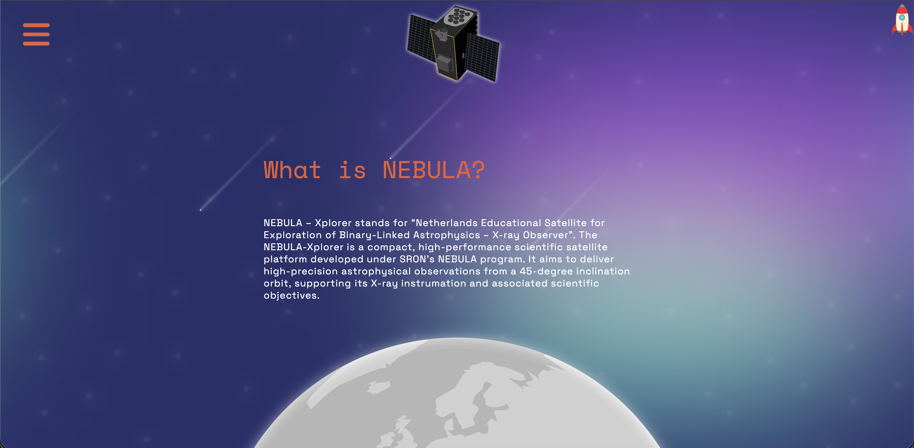
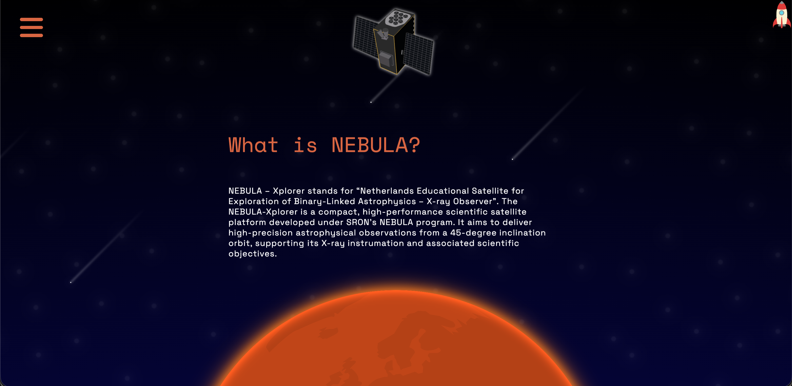
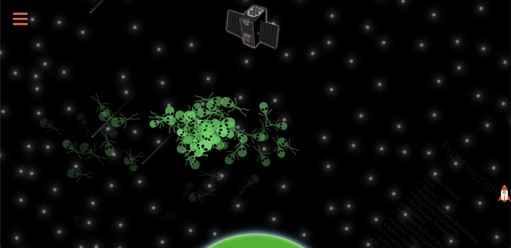

Hackaton
Project omschrijving
Binnen vier dagen een volledige website bouwen voor een echte opdrachtgever. Dat was de Meesterschap Hackaton. Ons team (Thomas, Braham, Melvin en ik) maakten een website voor NEBULA, een satelliet die in 2030 de ruimte in wil. De site heeft een scroll-animatie waarbij de satelliet om de aarde draait, verborgen easter eggs en twee visuele thema's: aurora en black hole.
Plannen, ontwikkelingen en reflecties
Dag één was conceptdag: we besloten meteen dat de animatie van de satelliet om de aarde het visuele middelpunt zou zijn. De scroll-animatie werd het meest complexe onderdeel technisch gezien: de timing moest kloppen zodat de satelliet soepel meebeweegt terwijl de gebruiker scrollt.
We verdeelden het werk snel: ik pakte het animatiewerk en de theming op. De easter eggs werden een leuke bonus: een hidden Space Invaders minigame en een nyan cat animatie die je kunt triggeren als je weet waar je moet kijken. Dat soort kleine details maken een website gedenkwaardig.
Vier dagen is echt kort voor iets als dit. We moesten continu keuzes maken over wat wel en niet erin ging, en leren vertrouwen op elkaars code zonder alles zelf te willen controleren. Dat samenwerken onder tijdsdruk was leerzaam.
Afbeeldingen




Uitkomsten en inzichten
Ik heb tijdens deze hackaton geleerd hoe je snel beslissingen neemt in een team, hoe je code splitst zodat je niet constant merge conflicts krijgt, en hoe je een concept in hoog tempo uitvoert zonder de kwaliteit helemaal te laten vallen. We hebben iets neergezet waar we trots op zijn binnen vier dagen. Dat voelde goed.
De scroll-gebaseerde animatie was iets nieuws voor mij en ik wil daar in de toekomst verder mee spelen. En de easter eggs? Altijd een goed idee.